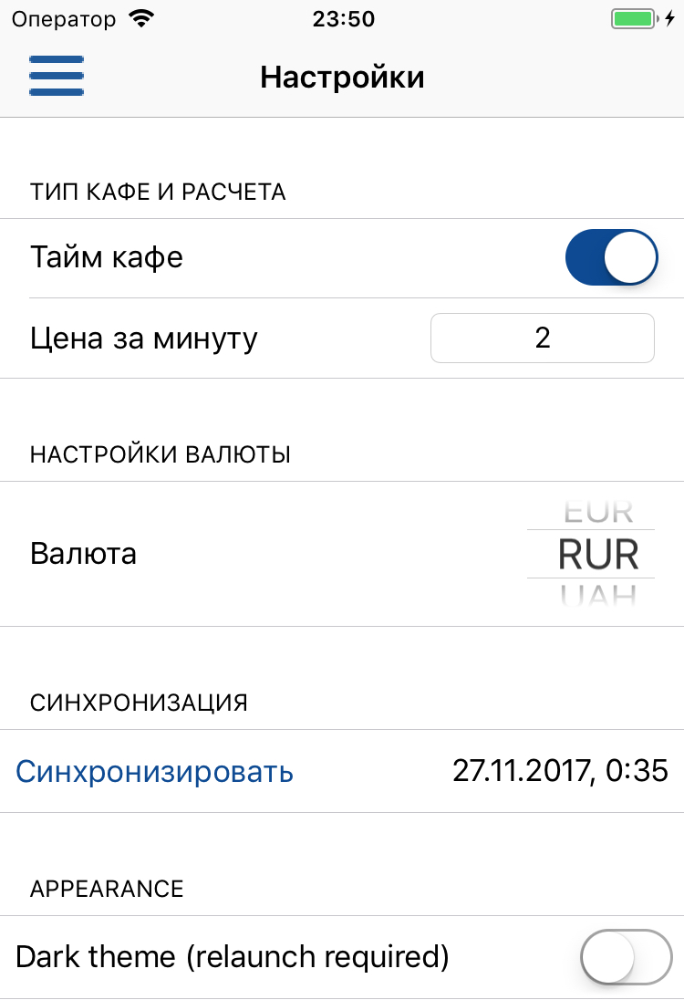
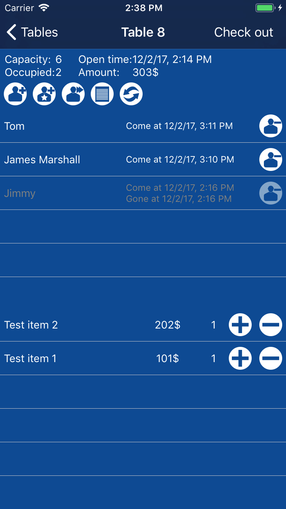

Зайдите в настройки приложения. Здесь Вам необходимо выбрать тип заведения - обычное, либо тайм кафе. Если Вы включили настройку "Тайм кафе", необходимо заполнить поле стоимости в минуту.
Так же необходимо выбрать валюту. Приложение не поддерживает пересчет валют, данная настройка отвечает лишь за отображение типа валюты в приложении.

К сожалению на данный момент приложение поддерживает только ручную синхронизацию для переноса данных между устройствами, работающими под тем же Apple ID. ВНИМАНИЕ! НЕ ИСПОЛЬЗУЙТЕ синхронизацию для одновременной работы с данными на разных устройств. Ваши данные могут быть частично потеряны или искажены. Используйте синхронизацию для переноса данных на другое устройство ТОЛЬКО тогда, когда на втором устройстве нет данных приложения (приложение только установлено):
1. Установите приложение на второе устройство.
2. Убедитесь, что оба устройства используют один и тот же AppleID (Настройки-iCloud).
2. Если на второе устройство уже было установлено приложение и там присутствуют данные, удалите его и установите заново
3. Выполните синхронизацию на первом устройстве - зайдите в Настройки и нажмите на кнопку "Синхронизировать". Когда синхронизация выполнится, напротив кнопки отобразится время выполнения синхронизации.
4. Запустите приложение на втором устройстве и запустите синхронизацию, как описано в предыдущем пункте.
5. После выполнения синхронизации на втором устройстве, проверьте данные, используя экраны Столики, Меню, История и Отчеты. Если все ок, удалите приложение на первом устройстве.
6. Не используйте приложение на первом устройстве и не синхронизируйте его с облаком, пока работаете со второго устройства. Одновременная работа и синхронизация пока не поддерживается!
Так же в настройках Вы можете выбрать светлую (по умолчанию) или темную цветовую тему. При включении/отключении темной темы, необходимо перезапустить приложение. Для этого откройте диспечер задач (двойным нажатием на кнопку Home) и свайпом вверх выбросите приложение из памяти. Затем запустите приложение повторно. Цветовая тема будет изменена.

Если у Вас возникла необходимость удалить данные с устройства и из облака, удалите все столики и пункты меню. Затем выполните синхронизацию. Данные будут удалены.